Drive Belt Tensioner: Service and Repair
11 28 020 Replacing tensioning device for alternator drive belt (S63T)
Special tools required:

Necessary preliminary tasks:
- Remove alternator drive belt
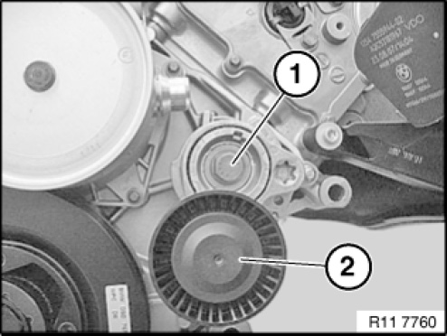
If necessary, remove special tool 11 0 390 .
Release screw (1).
Tightening torque 11 28 1AZ.
Remove belt tensioner with idler pulley (2).

Assemble engine.
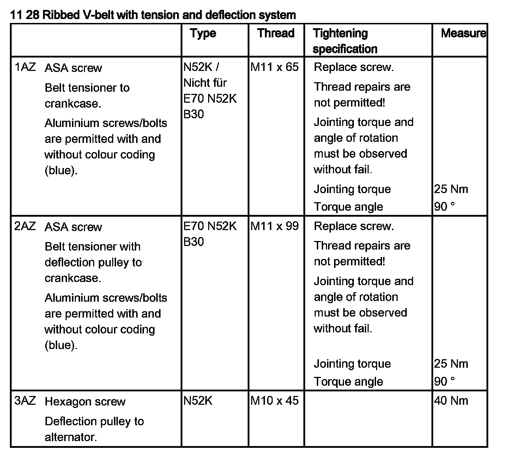
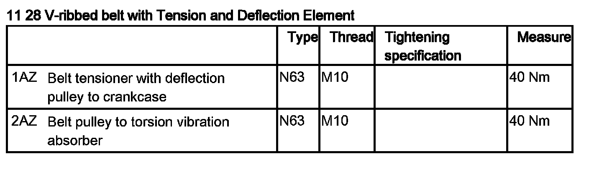
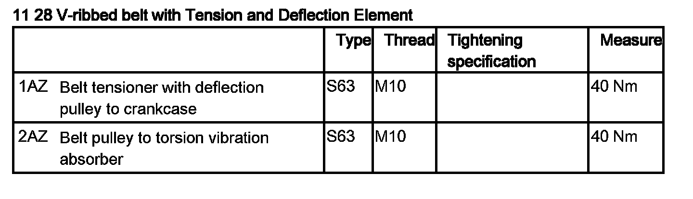
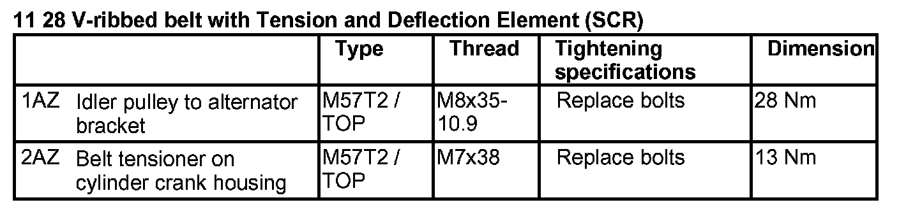
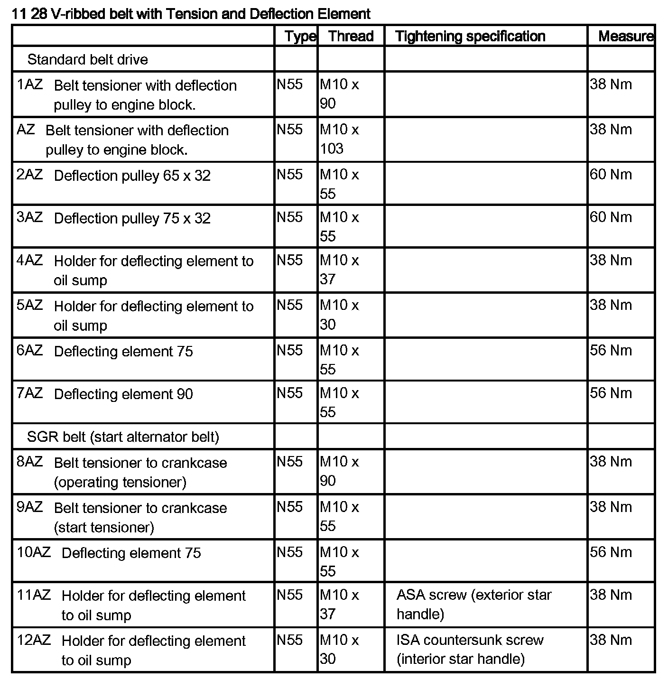
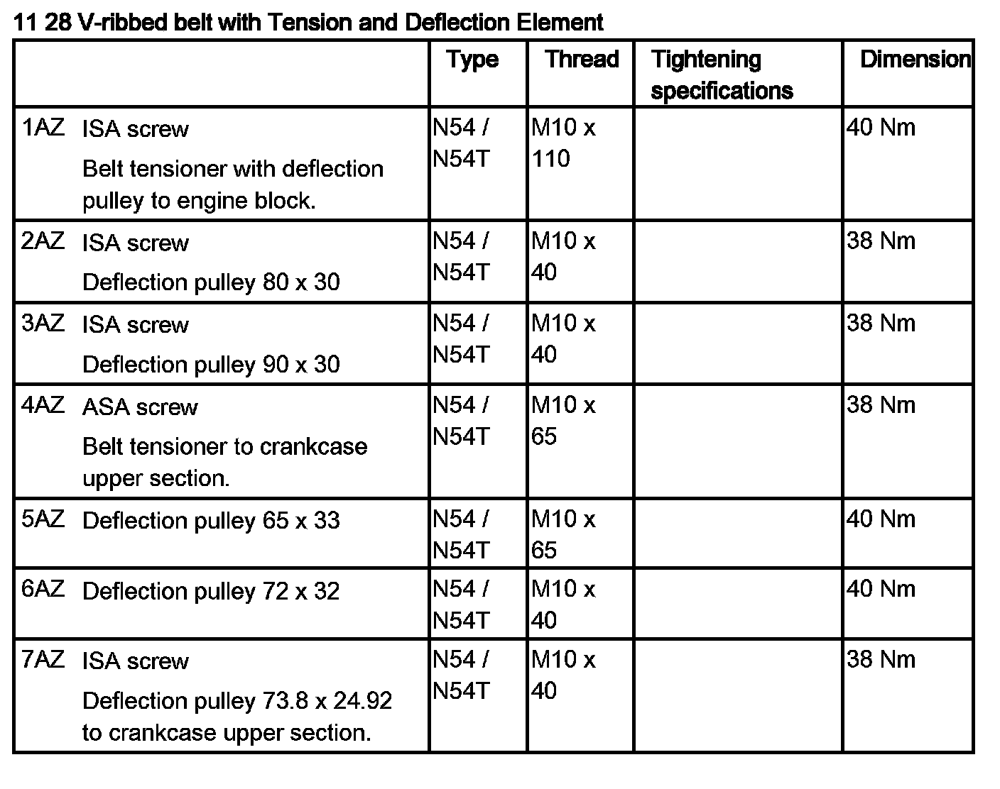
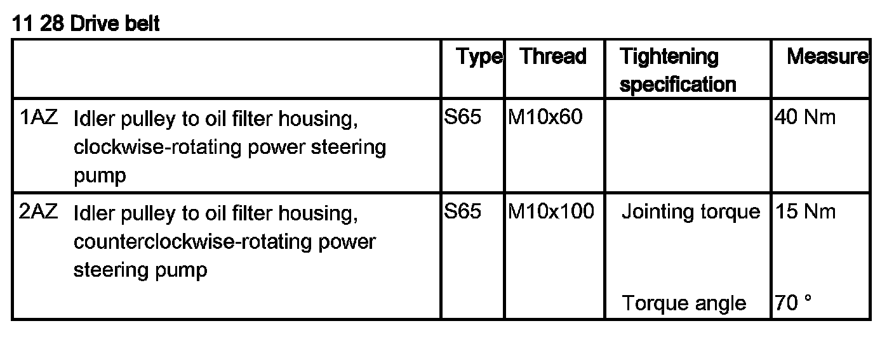
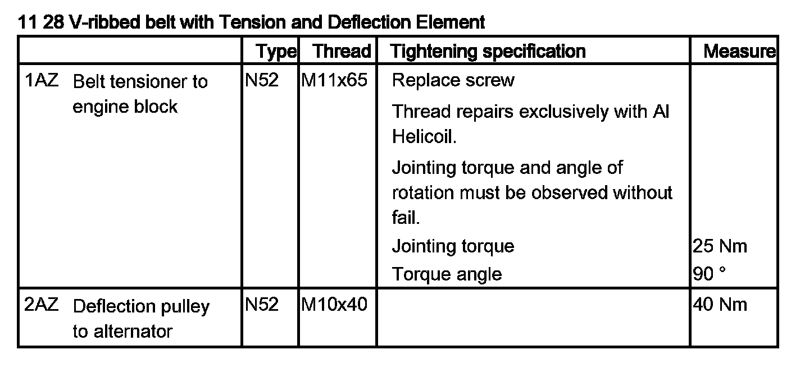
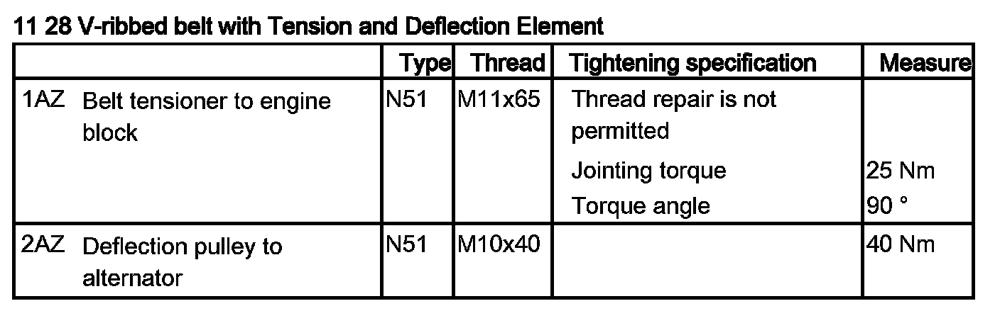
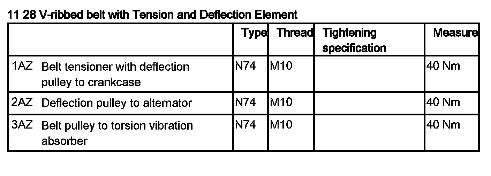
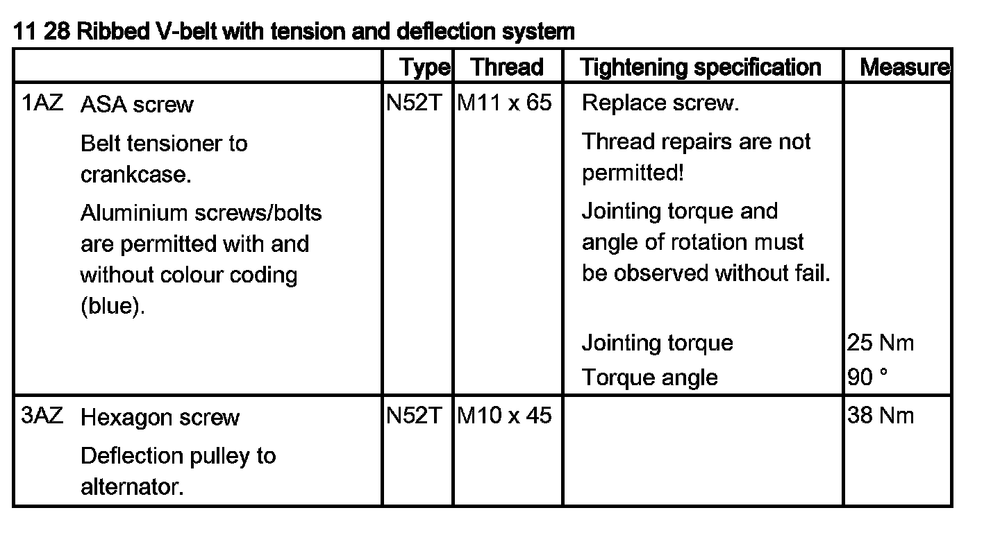